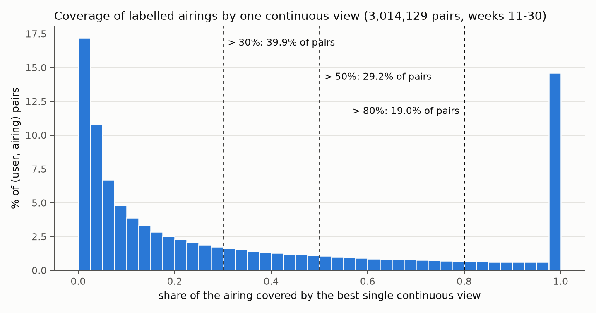
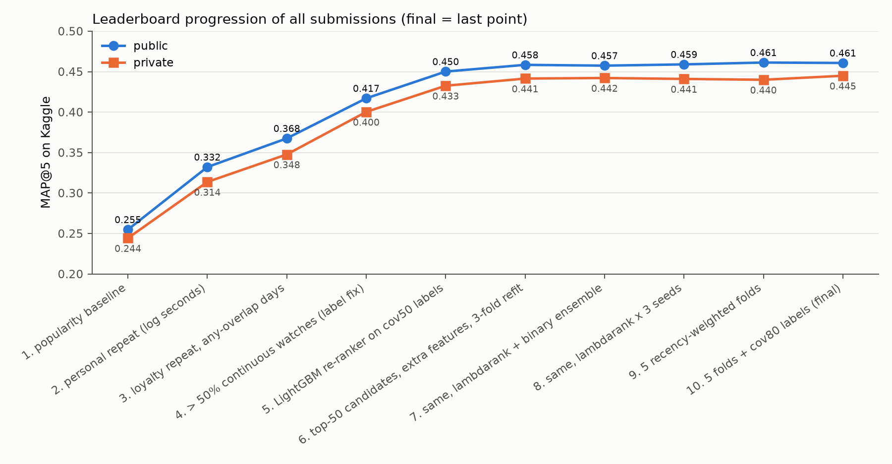
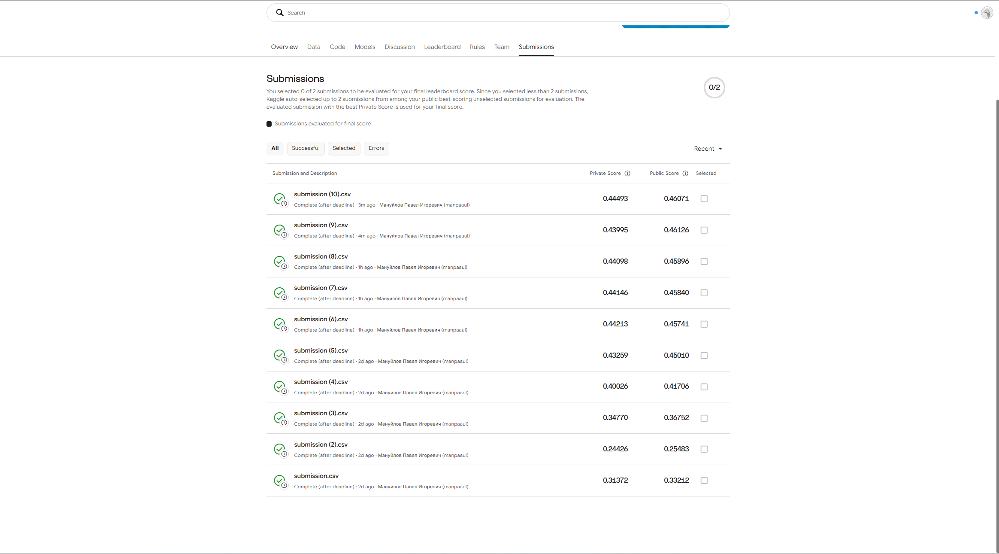
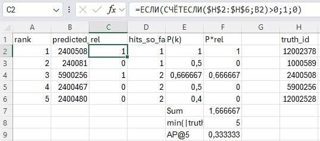

Abstract — The task is to predict, for 1,260 test users, the five TV programmes they will watch in weeks 31-42 from a view log of weeks 11-30 and the broadcast schedule, in which only 10.8% of the airings of weeks 11-20 carry a programme id. I join views to airings by channel and interval overlap, count a programme as watched when one continuous view covers more than 50% of an airing, compare popularity, implicit ALS, content-based filtering, repeat models and a slot-habit model on one temporal hold-out, and re-rank their candidates with a LightGBM ensemble. The designated final submission scores 0.44493 private / 0.46071 public MAP@5 against 0.24426 / 0.25483 for popularity; on validation it reaches 0.4265 against 0.4080 for the best single model. Takeaway: the definition of the label mattered more than the model; my first, any-overlap label fitted three leaderboard points almost perfectly and was still wrong.
Index Terms — TV recommendation, implicit feedback, learning to rank, temporal validation, MAP@5
Problem statement. sweet.tv published a view log (5,821,987 views of 4,914 users, 2020-03-09 to 2020-07-26) and three schedule files (weeks 11-20, 21-30, 31-42) [1]. A view has a user, a channel and a time interval; a programme exists only in the schedule. For each of the 1,260 users in submission.csv the system must output five tv_show_ids for weeks 31-42; the metric is MAP@5. Only labelled airings can become items: 10.76% of the schedule rows of weeks 11-20 have tv_show_id ≠ 0 (11.31% and 11.18% in the other two files, docs/data_inspection.md).
Motivation. Linear TV is watched by habit: the same news, series and slots, day after day. A recommender that only re-lists what a user already watches can still be useful, but it has to be measured on the right notion of "watched", and a model has to be judged on future weeks it has not seen.
Concrete example. Test user 2725163102947201526 watched 662.4 hours and touched 504 labelled programmes in weeks 11-20. For weeks 21-30 the final setup recommends Сегодня, Факты, Утро с Украиной, Викна-Новости and ТСН; two of them (Сегодня, Утро с Украиной) are in the user's true top-5, which gives AP@5 = 0.3333 (reports/hand_check.md).
Contributions.
Prior work consulted. The competition page [1] hosts the data and the leaderboard. A prize-winning write-up for this competition [2] counts a programme as watched only when more than 80% of it was seen without switching channels, uses a simple count-based baseline ("more than 50% of the show in a single sitting") and a second layer with LightGBM; I took the label idea and some feature ideas from it, no code. Implicit ALS weights observed interactions by confidence instead of treating them as ratings; I used the implicit library [5]. The re-ranker is gradient boosting with LightGBM [3] and its LambdaRank objective [6], which optimizes a ranking metric directly. Cremonesi et al. [4] showed that a non-personalized popularity list is a strong top-N baseline, which is why every method here is compared with one.
Alternatives considered.
Approach. Everything runs offline in Python (src/, one module per step, python -m src.run_all reproduces the tables, examples and figures). A temporal hold-out mirrors the real task: history weeks 11-20, target weeks 21-30. The final model is a second layer over candidates from simple habit-based models.
Pipeline.
build_interactions.py): glue the three schedules (3,441,607 airings kept, end = start + duration in seconds); merge overlapping or touching views of the same user on the same channel (5,821,987 views → 5,441,773 intervals, viewing time −1.3%), so parallel devices do not count twice; split intervals at Monday 00:00 so every interaction belongs to one ISO week; join on vsetv_id = channel_id with interval overlap. Result: 3,026,937 labelled (user, airing, week) pairs; 52.89% of viewing time falls on labelled airings, 41.15% on tv_show_id = 0, 5.96% matches no airing.coverage.py): for every (user, airing) the share of the airing covered by the best single continuous view. Fig. 1 shows why a threshold is needed: most pairs are short glimpses, a second peak are complete airings. A programme's target count = airings with coverage > 50% (cov50); the user's top-5 by that count is the validation ground truth.docs/hybrid_v4_results.md).

Fig. 1. Left: coverage of labelled airings by one continuous view (3,014,129 (user, airing) pairs, weeks 11-30; > 30 / 50 / 80%: 39.9 / 29.2 / 19.0% of pairs). Right: public and private score of all ten Kaggle submissions (Table II).
Tools & libraries. Python 3.11.9 on Windows 11 (Intel i7-11370H, 4 cores, 15.7 GB RAM); DuckDB 2.0.0 for joins [7]; pandas 3.1.0, NumPy 2.4.6, SciPy 1.17.1; implicit 0.7.3 [5]; LightGBM 4.7.0 [6]; scikit-learn 1.9.1 (TF-IDF); matplotlib 3.11.2. Pinned versions: requirements.txt.
Key design decisions.
Configuration. Popularity: watch seconds, last 10 history weeks. ALS: BM25-weighted decayed days, 8 factors, regularization 0.01, α = 0.3, 15 iterations. CBF: TF-IDF over category, genres, decade, director and up to 5 actors per row (names in ≥ 2 programmes), people weight 4, user profile = weighted mean, cosine. repeat_cov: airings with > 30% coverage, half-life 4 weeks, loyalty scaling with β = 10, at least 3 such watches. Slot habits: channel × weekday/weekend × hour, half-life 8. LightGBM: learning rate 0.05, LambdaRank 15 leaves / 20 min. child samples, binary 63 / 100, subsample and column sample 0.8, early stopping (100 rounds) on 10% of training users. Seed 42 everywhere (ALS, LightGBM with deterministic=True, holdouts, samples); ensembles add 43 and 44. Runtime: src.run_all 1,397 s end to end, of which the final ensemble 1,263 s; every single method ≤ 2.3 s (docs/runtimes.md, Table I).
Setup. Validation: history weeks 11-20, target weeks 21-30, the 1,260 test users (their weeks 21-30 views are training data, so they may be used). Candidate pool: the 6,376 labelled programmes airing in weeks 21-30, identical for every method; repeats of already-watched programmes are allowed. MAP@5 is the Kaggle formula (src/metrics.py); users with an empty ground truth count as 0. Every method outputs exactly five distinct ids: own ranking first, then the shared popularity fallback. Cold start: 10 test users have no labelled interaction in weeks 11-20 and 2 in weeks 11-30 (docs/join_summary.md); they get the fallback in the single methods. The hybrids never need it, because popularity is one of their candidate sources. A re-ranker's temporal check is the same model trained only on folds whose labels end before week 21. Hardware: as in §3.
TABLE I. ALL METHODS ON THE SAME HOLD-OUT (MAP@5, 1,260 TEST USERS, TARGET WEEKS 21-30; SOURCE docs/results_table.csv)
Comparison vs baseline. The final setup beats popularity by 0.151 on cov50 and the best single model (repeat_cov) by 0.018. Both required methods are below popularity: ALS by 0.022 and CBF by 0.160. Slot habits, which ignore programme identity and use only channel and hour, are almost as good as repeat_cov. On the leaderboard (Table II) the big steps (popularity → repeat → coverage-based repeat → hybrid) move with validation; the last six hybrids differ on validation by less than its run-to-run noise (§5), so validation cannot order them.
TABLE II. THE TEN KAGGLE SUBMISSIONS IN ORDER (VALIDATION = cov50, MAIN / TEMPORAL CHECK; SOURCE submissions/LOG.md)
Final submission. Kaggle disables submission selection for late submissions, so I designate it here: submission (10).csv = hybrid_v4_cov80.csv = submissions/final.csv, 0.46071 public / 0.44493 private. It is the best private score of the ten; its public score is second to submission (9) (0.46126). The screenshot of the Submissions page is Fig. 2. Repository: github.com/ManuylovPI/rec_sys_mid_ex, code and results at commit {{COMMIT}}.

Fig. 2. Kaggle Submissions page with all ten scored submissions (reports/figures/kaggle_submissions.png).
Verification.
docs/join_verification.md).tests/test_metrics.py, 6 hand-computed cases (e.g. hits at ranks 1 and 3 of 3 relevant → 5/9), all pass.docs/repeat_cont_results.md, §5).src/submission.py).
Fig. 3. Hand check of AP@5 in Excel for one validation user; the result matches src.metrics.apk.
I chose the users by a fixed rule (src/examples.py): a heavy viewer closest to the 90th percentile of history viewing time, and a light viewer with a thin history (1-20 labelled programmes touched in weeks 11-20 against a median of about 200; the one with the most target programmes). Both have five target programmes.
TABLE III. TOP-5 PER METHOD FOR THE SAME TWO USERS, WEEKS 21-30 (ID TITLE [CATEGORY]; BOLD = IN THE USER'S cov50 TOP-5, * = WATCHED IN WEEKS 11-20, † = FALLBACK SLOT; SOURCE docs/examples.md)
Familiar vs new. For the heavy viewer every method except CBF recommends only programmes the user already watched; the user's true top-5, however, contains two children's series (Удивительный мир Гамбола, Время приключений) that no method proposed, possibly watched by another household member on the same account. For the light viewer repeat_cov has nothing of its own and falls back to popularity in all five slots, while the hybrid fills them from its own candidates and finds the one hit, ТСН, like popularity does.
How the methods differ. ALS and popularity both put the big news shows first: on this data a low-rank model mostly learns popularity (its best configuration has only 8 factors). CBF looks for similar metadata and proposes new entertainment shows, none of which the users watched. Repeat models know only the user's own history; slot habits know only the user's channels and hours. The re-ranker uses both: in the hybrid_v2 setup the slot rank carries 44.7% of the total gain and the repeat rank 15.1% (docs/hybrid_cov50_feature_importance.md). Association rules and personalized PageRank were not implemented; conceptually, rules would add "after A, B" co-viewing and PageRank would spread a history to neighbouring programmes, i.e. towards discovery, the direction in which ALS and CBF already did worse here.
Decision. For sweet.tv I would choose the two-layer strategy: habit-based candidates (repeat counts on coverage, slot habits, popularity) re-ranked by a learned model. It is the best on validation and on the leaderboard (Table II), and it degrades gracefully for thin histories. Its cost is the honest trade-off: repeat_cov runs in about 1 s and reaches 0.4080 on validation, the final ensemble needs about 21 minutes for 0.4265; a service could serve repeat_cov as the always-on default and refresh the re-ranker offline. For the user experience the lists are mostly familiar programmes; this matches how linear TV is watched, but it is not discovery, and nothing in the data tells whether a recommended new programme would have been enjoyed. Limitations: only 10.8% of airtime has an id, so the remaining viewing is invisible as items; the hidden label is still only approximated (§5); absence from the log does not mean a user never saw a programme elsewhere.
Failure case. The main problem was the wrong validation label. At first a show counted for a user on a day if any part of a view overlapped it (n_days). This label matched my first three Kaggle scores almost perfectly, so it looked right. Before the next submission I wrote down what it predicted: about 0.298. The real score was 0.417.
Root cause. All three submissions ranked shows by overlap counts. So they agreed with an overlap-based label by construction. They could not show which label definition was actually right. One diagnostic submission, repeat_cont50, with coverage-based counts, settled it: coverage-based labels fit the leaderboard much better. I switched to cov50 and retrained the hybrid.
Two smaller problems. A time-zone bug shifted day counts by three hours; I fixed it (docs/errata.md). The LightGBM hybrids are not fully reproducible: validation drifts by about ±0.001 between runs. The likely cause is ties in the rank features, but I have not verified this.
What worked.
What did not work as expected.
Next improvement. Make the rank features deterministic and run the final experiment twice. Then compare models only when their difference is larger than this run-to-run noise.
AI tools used. {{AI_STATS}} Claude (Anthropic, claude.ai chat), outside Claude Code: planning the stages, drafting my prompts, finding and reading the prize-winning write-up together with me, and the report plan (docs/report_plan.md).
How AI was used. Code generation for every module in src/, data inspection and debugging (the time-zone bug, the user-id overflow), experiment runs and logging, reference checks (DOIs and URLs), figures and a first draft of this report (Claude Code); planning and prompt drafting (Claude). I wrote the Discussion myself; Claude in the claude.ai chat only corrected its wording and a few factual details.
What I personally verified. I read the Melentev write-up myself and checked the label definition and the 0.41296 baseline in it; I entered all ten Kaggle scores from my submissions page and checked LOG.md against the screenshot; I looked at the first rows of a submission file (integer user ids, five ids per row); I computed AP@5 for one user by hand in Excel and it matches the code (Fig. 3); after pushing, I clicked the repository link and the Table II links, and they open.
What I trusted without verification. The aggregate numbers in Tables I-III and the logs were computed by agent-written code that I did not re-implement; the agent's join check and unit tests are the only independent checks of that code. The metadata of references [3] and [4] was checked by the agent through the publisher page and Crossref, not read in full by me. The agent could not open [2] (HTTP 403); I verified it myself. The cause given for the reproducibility limit is a hypothesis.
Session log reference. manuilov_exam_session.json is the original, unmodified Claude Code transcript of this session. Claude Code stores sessions natively as JSONL (one JSON record per line); because the submission form accepts only .json and .pdf, I changed only the file extension from .jsonl to .json. The content is unmodified, byte for byte.
[1] Kaggle, "sweet.tv - TV program recommender," community prediction competition, 2020. [Online]. Available: https://www.kaggle.com/competitions/sweettv-tv-program-recommender. [Accessed: Oct. 24, 2026].
[2] N. Melentev, "Two-layered recommender system methodology: a prize-winning solution," Towards Data Science, Mar. 20, 2021. [Online]. Available: https://towardsdatascience.com/two-layered-recommender-system-methodology-a-prize-winning-solution-c4bdb815b156. [Accessed: Oct. 22, 2026].
[3] G. Ke, Q. Meng, T. Finley, T. Wang, W. Chen, W. Ma, Q. Ye, and T.-Y. Liu, "LightGBM: A highly efficient gradient boosting decision tree," in Advances in Neural Information Processing Systems 30 (NIPS 2017), 2017. [Online]. Available: https://proceedings.neurips.cc/paper/2017/hash/6449f44a102fde848669bdd9eb6b76fa-Abstract.html. [Accessed: Oct. 24, 2026].
[4] P. Cremonesi, Y. Koren, and R. Turrin, "Performance of recommender algorithms on top-N recommendation tasks," in Proc. 4th ACM Conf. Recommender Systems (RecSys), 2010, pp. 39-46. [Online]. Available: https://doi.org/10.1145/1864708.1864721. [Accessed: Oct. 24, 2026].
[5] "Implicit: Fast Python collaborative filtering for implicit datasets," documentation (v0.7.2 online; v0.7.3 used). [Online]. Available: https://benfred.github.io/implicit/. [Accessed: Oct. 24, 2026].
[6] LightGBM, "Parameters," LightGBM documentation. [Online]. Available: https://lightgbm.readthedocs.io/en/latest/Parameters.html. [Accessed: Oct. 24, 2026].
[7] DuckDB, "Documentation." [Online]. Available: https://duckdb.org/docs/. [Accessed: Oct. 24, 2026].